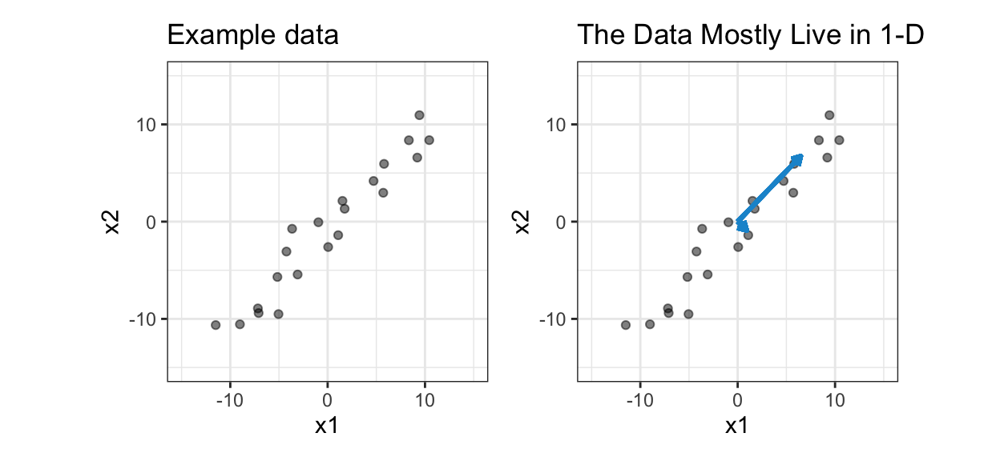
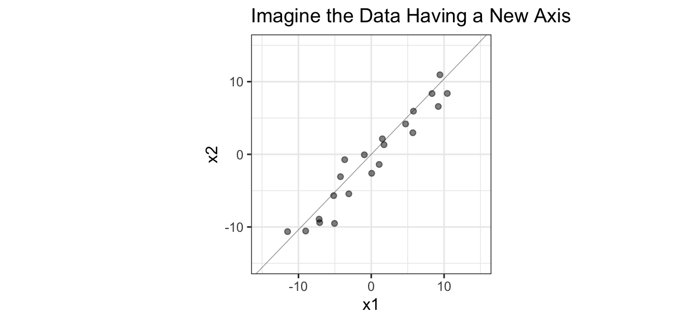
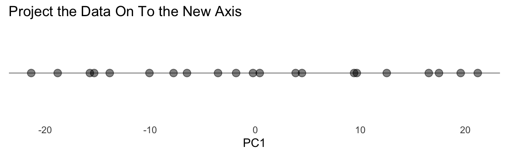
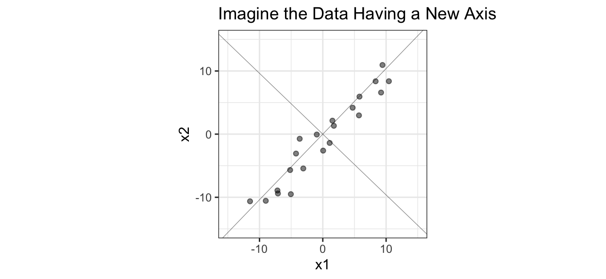
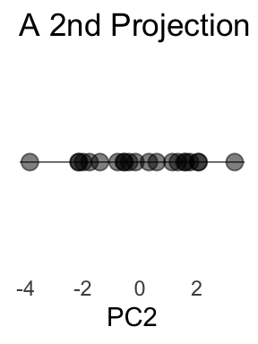
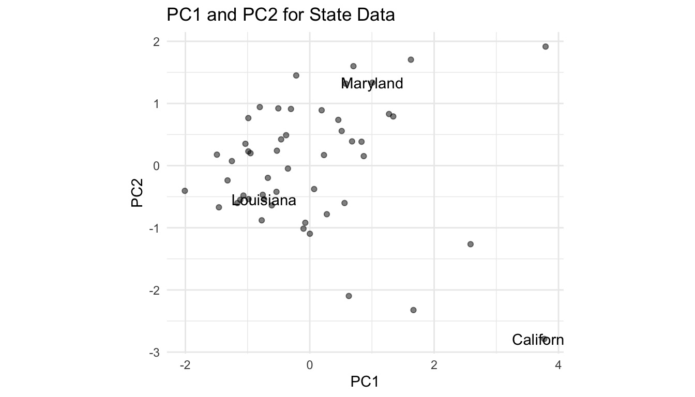
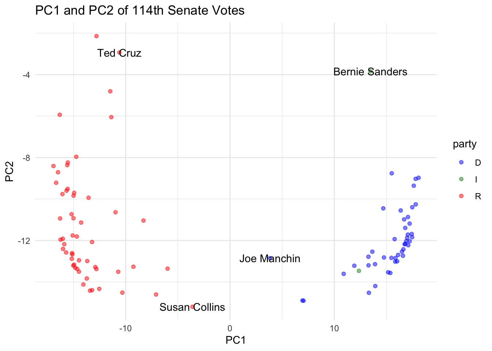

22 Dimension Reduction
Unsupervised Learning
Unsupervised Learning: A process of summarizing data without a “target,” “response,” or “outcome” variable.
Dimension reduction
Dimension reduction: Reducing the number of variables in a data set while maintaining the statistical properties of the data.
Clustering
Clustering: Grouping observations into homogeneous groups.
22.1 Dimension Reduction
22.1.1 Background
Problems:
- We want to generally understand large data sets with many variables
- We want to visualize the relationships between more than two or three variables
- We want to estimate a model but we have many correlated predictors
Solution:
Dimension reduction
Dimension reduction: Reducing the number of variables in a data set while maintaining the statistical properties of the data.
- Variable/Predictor/Feature selection: Process of selecting a subset of variables/predictors/features that contribute the most to a model, statistic, or data visualization
- Variable/Predictor/Feature extraction: Process of combining variables/predictors/features into a reduced subset of new informative and non-redundant variables/predictors/features
What does it mean for a variable to be informative and non-redundant?
Sample variance:
Sample variance: A measure of data dispersion. Average of squared deviations from the mean.
Sample covariance:
Sample covariance: A measure of the strength and direction of a linear relationship between two variables.
Covariance matrix:
Covariance matrix (variance-covariance matrix): A \(p*p\) symmetric matrix with variances on the main diagonal and covariances off of the main diagonal:
\[\begin{bmatrix} s_1^2 & s_{12} & s_{13} \\ s_{21} & s_2^2 & s_{23} \\ s_{31} & s_{32} & s_3^2 \end{bmatrix}\]
Total sample variance
Total sample variance: The total amount of dispersion within a data set. The sum of the diagonal terms in the covariance matrix. 1
Orthogonal:
Orthogonal: Perpendicular. Orthogonal variables are linearly uncorrelated.
We can think of a data set as having a total amount of variance. If variables are identical or highly correlated, then it is easy to capture all or most of the total variance with a subset or linear combination of the variables. We want these new variables to be orthogonal.
22.1.2 Principal Component Analysis (PCA)
Principal Component Analysis:
Principal Component Analysis: A process that transforms many possibly linearly correlated variables into a set of linearly uncorrelated variables called principal components. The components are ordered such that the first component explains the most variance in the original data, the second explains the second most variance in the original data, and so on. A subset of principal components can often be used to represent the original data with limited information loss.
Visual Explanation
Assume there are two variables \(x_1\) and \(x_2\). \(x_1\) has mean zero and \(x_2\) has mean zero.
\(x_1\) and \(x_2\) are highly correlated. In fact, the data are mostly dispersed in one direction, from southwest to northeast because the data are so highly correlated.
Imagine adding a new axis through the main pattern in the data. This axis should minimize the sum of squared perpendicular distances from each point to the line.

If we project the data onto the main diagonal, then we can dramatically simplify the data without losing much of the variation. In this case, that means moving the points in 2-D to their closest points on the diagonal and then putting them into 1-D.
This plot represents the first principal component, and it captures most of the variation in the data.

Imagine adding a new axis, that is orthogonal to the first PC, through the second pattern in the data. This axis should minimize the sum of squared perpendicular distances from each point to the line.

If we project the data onto the second diagonal, then we can further simplify the data–though less than with the first project. Again, this means moving the points in 2-D to their closest points on the diagonal and then putting them into 1-D.

Mathematical Explanation
Principal components are weighted combinations of variables in the original data set.
\[PC_1 = \phi_{11} x_1 + \phi_{21}x_2 \text{ where } \phi_{11}^2 + \phi_{21}^2 = 1\]
\(\phi_{11}\) and \(\phi_{21}\) are called loadings, and they come from the dominant eigenvector from an eigenvector decomposition of the covariance matrix of the original data set. The eigenvectors specify the orientation of the principal components relative to the original variables. Each eigenvector has an eigenvalue, or the variance explained by the corresponding principal component. The eigenvalues must decrease from the first principal component (corresponding to the dominant eigenvector) to the last.
\[PC_2 = \phi_{12} x_1 + \phi_{22}x_2 \text{ where } \phi_{12}^2 + \phi_{22}^2 = 1\]
\(\phi_{12}\) and \(\phi_{22}\) are called loadings and they come from the second dominant eigenvector from an eigenvector decomposition of the covariance matrix of the original data set.
Note
A more thorough introduction of PCA requires the use of linear algebra which is not assumed for this coursework. If you want to learn more about PCA, you can start with this blog which gives a linear algebraic approach while also provides intuitive graphics.
Take a simple example with 10 observations of body_weight and height. All observations are centered and scaled.
| body_weight | height |
|---|---|
| -1.34 | -1.49 |
| -1.16 | -1.02 |
| -0.77 | -0.56 |
| -0.51 | 0.37 |
| -0.22 | -0.09 |
| 0.02 | -0.56 |
| 0.28 | 0.37 |
| 0.80 | 1.30 |
| 1.32 | -0.09 |
| 1.58 | 1.77 |
We want to generate weights to combine body_weight and height into an entirely new variable called PC1.
body_weight height
body_weight 1.000000 0.805714
height 0.805714 1.000000eigen() decomposition
$values
[1] 1.805714 0.194286
$vectors
[,1] [,2]
[1,] -0.7071068 0.7071068
[2,] -0.7071068 -0.7071068pca_bmi_ex <- bmi_ex %>%
mutate(PC1 = body_weight * 0.7071068 +
height * 0.7071068) %>%
mutate(PC2 = body_weight * -0.7071068 +
height * 0.7071068)
knitr::kable(pca_bmi_ex, digits = 2)| body_weight | height | PC1 | PC2 |
|---|---|---|---|
| -1.34 | -1.49 | -2.00 | -0.10 |
| -1.16 | -1.02 | -1.54 | 0.10 |
| -0.77 | -0.56 | -0.94 | 0.15 |
| -0.51 | 0.37 | -0.09 | 0.62 |
| -0.22 | -0.09 | -0.22 | 0.09 |
| 0.02 | -0.56 | -0.38 | -0.41 |
| 0.28 | 0.37 | 0.46 | 0.07 |
| 0.80 | 1.30 | 1.49 | 0.36 |
| 1.32 | -0.09 | 0.87 | -1.00 |
| 1.58 | 1.77 | 2.37 | 0.13 |
The principal components aren’t necessarily interpretable, but they capture all of the variance in the data and are orthogonal (linearly uncorrelated). However, in this example, PC1 is essentially the “latent” variable “size” and PC2 is essentially body-mass index.
22.1.3 Variance Explained
So how much variance does a principal component explain? How much variance do the first three principal components explain?
It depends on the nature of the data. If variables in the data set have strong linear relationships, then the first few principal components can explain much of the variation.
Proportion of variance explained:
Proportion of variance explained (PVE): The proportion of variation captured by the \(k^{th}\) principal component
Cumulative variance explained:
Cumulative variance explained (PVE): The proportion of variation captured by the \(1^{st}\) through \(k^{th}\) principal components
Take the body weight and height example from above. PC1 captures more than 90 percent of variation in the original data. This is excellent. We took a two variable data set and captured 90 percent of its variation with one variable!
22.1.4 2nd Interpretation
The principal components create the p-dimensional space that is closest to the observations in the data.
The line in Section 22.1.2.1 above is the line that is closest to all of the data. Two principal components in a data set with 50 variables create a plane that is closest to all observations in the data in 50 dimensions.
22.1.5 Implementation
PCA is implemented in R with prcomp(). However, we will use library(recipes) from the tidymodels framework.
PCA requires numeric data. Categorical variables need to be recoded with techniques like dummy variable encoding. Use step_dummy() to create dummy variables. Mixing continuous variables and dummy variables in the same PCA is possible but can complicate interpretation.
The scale of variables matters. If one variable has a range of \([0, 1000000]\) and another has a range of \([0, 0.1]\), then the first variable will dominate the second variable. Sometimes this makes sense if the units are the same or the ranges matter. Other times it does not make sense.
PCA always mean centers data. In many cases, variables are standardized by dividing by their standard deviations or are min-max scaled. step_normalize() centers and scales a variable. step_range() converts variables to a scaled numeric range (e.g. 0 to 1).
22.1.6 Tutorial 1 (continuous variables)
state_data includes numeric variables about state household population (hhpop), state home ownership rate (horate), and state median household income (medhhincome). The objective is to plot the three variables in two dimensions.
# load statedata from library(urbnmapr)
state_data <- urbnmapr::statedata
knitr::kable(head(state_data), digits = 3)| year | state_fips | state_name | hhpop | horate | medhhincome |
|---|---|---|---|---|---|
| 2015 | 01 | Alabama | 1846380 | 0.681 | 44700 |
| 2015 | 02 | Alaska | 250183 | 0.631 | 70600 |
| 2015 | 04 | Arizona | 2463012 | 0.621 | 51000 |
| 2015 | 05 | Arkansas | 1144657 | 0.655 | 42000 |
| 2015 | 06 | California | 12895471 | 0.537 | 64600 |
| 2015 | 08 | Colorado | 2074517 | 0.639 | 63500 |
Attaching package: 'recipes'The following object is masked from 'package:stringr':
fixedThe following object is masked from 'package:stats':
steplibrary(broom)
# normalize numeric variables
recipe1 <- state_data %>%
recipe() %>%
step_normalize(hhpop, horate, medhhincome) %>%
prep()
# apply estimated mean and sd to original data
state_numeric_data <- recipe1 %>%
bake(new_data = state_data)
# look at the correlation matrix
state_numeric_data %>%
select(hhpop, horate, medhhincome) %>%
cor() hhpop horate medhhincome
hhpop 1.00000000 -0.2926963 0.01883672
horate -0.29269634 1.0000000 -0.37477714
medhhincome 0.01883672 -0.3747771 1.00000000# estimate the loadings
recipe2 <- state_numeric_data %>%
recipe() %>%
step_pca(hhpop, horate, medhhincome) %>%
prep(data = state_numeric_data)
# apply loadings to original data
state_pca <- recipe2 %>%
bake(new_data = state_numeric_data)
# visualize!
ggplot() +
geom_point(
data = state_pca,
aes(PC1, PC2),
alpha = 0.5
) +
geom_text(
data = filter(state_pca, state_fips %in% c("06", "22", "24")),
aes(PC1, PC2, label = state_name)
) +
labs(title = "PC1 and PC2 for State Data") +
coord_equal() +
theme_minimal()
# A tibble: 12 × 4
terms value component id
<chr> <dbl> <int> <chr>
1 variance 1.48 1 pca_vPMZE
2 variance 0.982 2 pca_vPMZE
3 variance 0.533 3 pca_vPMZE
4 cumulative variance 1.48 1 pca_vPMZE
5 cumulative variance 2.47 2 pca_vPMZE
6 cumulative variance 3 3 pca_vPMZE
7 percent variance 49.5 1 pca_vPMZE
8 percent variance 32.7 2 pca_vPMZE
9 percent variance 17.8 3 pca_vPMZE
10 cumulative percent variance 49.5 1 pca_vPMZE
11 cumulative percent variance 82.2 2 pca_vPMZE
12 cumulative percent variance 100 3 pca_vPMZEWe can look at the loadings (\(\phi_{ij}\)s) to determine how much each variable contributes to each principal component. Large loadings (positive or negative) indicate that the variable has a strong relationship to the principal component. The sign of the loading indicates the direction of the relationship. Here, horate contributes the most the PC1 and hhpop contributes the most to PC2.
# A tibble: 9 × 4
terms value component id
<chr> <dbl> <chr> <chr>
1 hhpop 0.445 PC1 pca_vPMZE
2 horate -0.700 PC1 pca_vPMZE
3 medhhincome 0.559 PC1 pca_vPMZE
4 hhpop -0.788 PC2 pca_vPMZE
5 horate -0.00963 PC2 pca_vPMZE
6 medhhincome 0.615 PC2 pca_vPMZE
7 hhpop 0.425 PC3 pca_vPMZE
8 horate 0.714 PC3 pca_vPMZE
9 medhhincome 0.556 PC3 pca_vPMZE22.1.7 Tutorial 2 (categorical variables)
Here we have a data set with 493 votes from two years of the 114th Senate (2015-2017). The data set has 100 rows and 495 variables. An affirmative vote is 1, a negative vote is -1, and an abstention is 0. The data are from Bradley Robinson and this example is based on an earlier analysis by Professor Sivan Leviyang.
Understanding the data or visualizing the data would be a time consuming task. Here are the first few columns and rows:
# A tibble: 6 × 6
name party v1 v2 v3 v4
<chr> <chr> <dbl> <dbl> <dbl> <dbl>
1 Lamar Alexander R 1 -1 -1 1
2 Kelly Ayotte R -1 -1 1 1
3 Tammy Baldwin D -1 1 -1 -1
4 John Barrasso R 1 -1 1 1
5 Michael Bennet D -1 1 -1 -1
6 Richard Blumenthal D -1 1 -1 -1Let’s use PCA to create principal components of the 493 votes variables.
The first principal component explains about 45 percent of the variation.
tidy(votes_rec, number = 1, type = "variance") %>%
filter(terms == "cumulative percent variance") %>%
slice_min(value, n = 5)# A tibble: 5 × 4
terms value component id
<chr> <dbl> <int> <chr>
1 cumulative percent variance 45.0 1 pca_U8dzV
2 cumulative percent variance 74.4 2 pca_U8dzV
3 cumulative percent variance 77.0 3 pca_U8dzV
4 cumulative percent variance 78.4 4 pca_U8dzV
5 cumulative percent variance 79.6 5 pca_U8dzVAt this point, we’ve estimated the loadings. Let’s apply the loadings to the original data with bake().
Let’s visualize the first two components and label a few key observations.
names <- c("Bernie Sanders", "Ted Cruz", "Joe Manchin", "Susan Collins")
ggplot() +
geom_point(
data = votes_pcs,
mapping = aes(PC1, PC2, color = party),
alpha = 0.5
) +
geom_text(
data = filter(votes_pcs, name %in% names),
mapping = aes(PC1, PC2, label = name)
) +
scale_color_manual(
values = c(`D` = "blue", `I` = "#228B22", `R` = "red")
) +
labs(title = "PC1 and PC2 of 114th Senate Votes") +
theme_minimal() +
guides(text = NULL)
22.1.8 How many principal components should you use?
By default, conducting PCA with library(recipes) will return as many principal components as there are variables. Because because our goal is dimensionality reduction, we need a way to determine how many principal components to keep for analysis. Several different criteria have been suggested:
- Ignore principal components at the point at which the next principal component offers little increase in the total explained variation.
- Include all principal components up to a predetermined total percent explained variation, such as 90%.
- Ignore components whose explained variation is less than the average variation explained, with the idea being that such a principal component offers less than one variable’s worth of information.
- Ignore the last principal components whose explained variation are all roughly equal.
Source: Holland (n.d.)
In linear algebra, the trace is the sum of the elements on the main diagonal of a matrix. The total sample variance is the trace of the variance-covariance matrix.↩︎